Tipos de sites
Para absorvermos o conceito de sites estáticos e dinâmicos vamos analisar dois sites e identificarmos
qual é o seu tipo.
No flow abaixo vamos analisar o site Vale
Gás:
Site estático não precisa que seu conteúdo seja sempre atualizado
Veja no flow abaixo uma análise do site O O Dia
Site dinâmico precisa de um back-end para guardar as informações e exibir
em tempo real, ou seja, é um site onde as suas informações estão sempre mudando, por exemplo um site de vendas
que precisa exibir produtos disponíveis em tempo real
E agora vou ter que aprender back-end também para criar sites dinâmicos?
O flow abaixo responde essa
pergunta:
Já conheço o que são sites estáticos e dinâmicos, mas qual eu devo começar a criar?
O flow abaixo responde essa pergunta
apresentando a curva de aprendizado da programação front-end:
Veja a curva de aprendizado da programação front-end na Figura 4
Figura 1. Curva de aprendizado
No começo criamos sites estáticos, ou seja, sites que não precisam de atualizações dinâmicas,
com o
tempo, prática e aprendizado criamos sites dinâmicos, ou seja, que o seu conteúdo muda em tempo real


 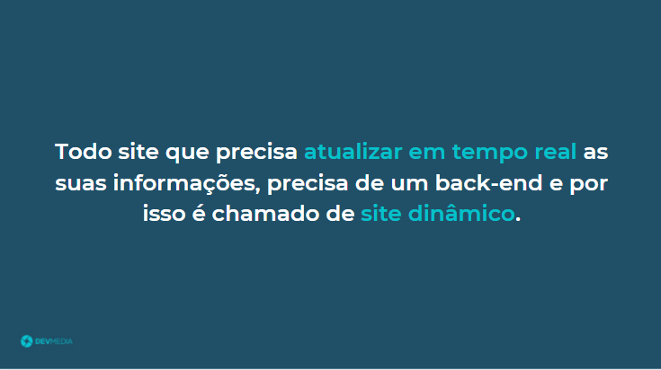
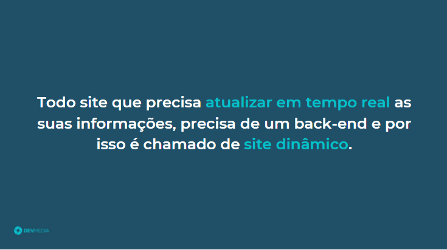

 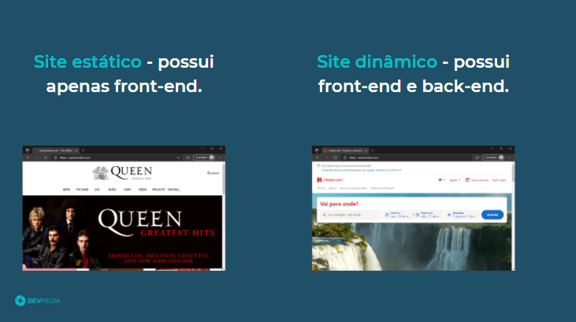
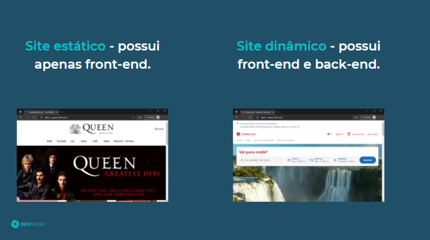


 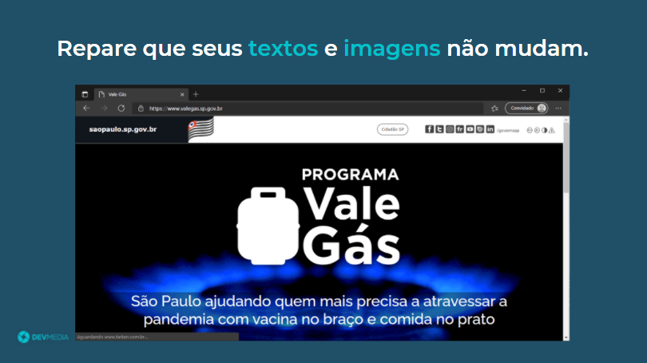
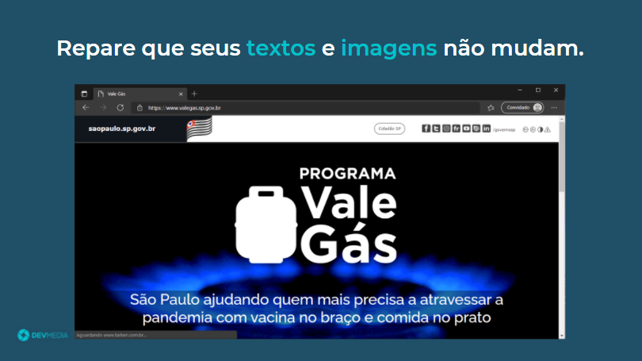
 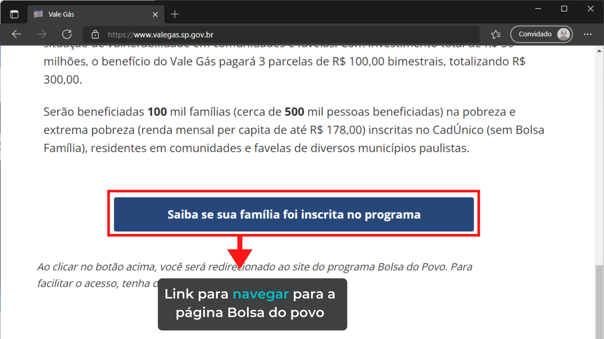
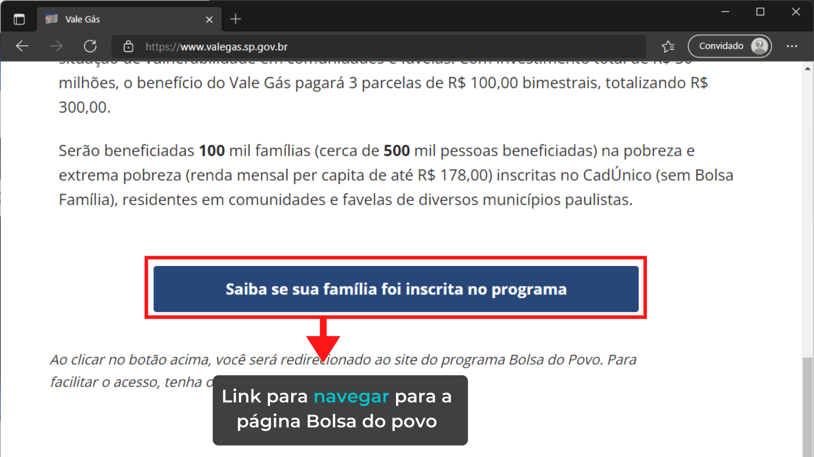


 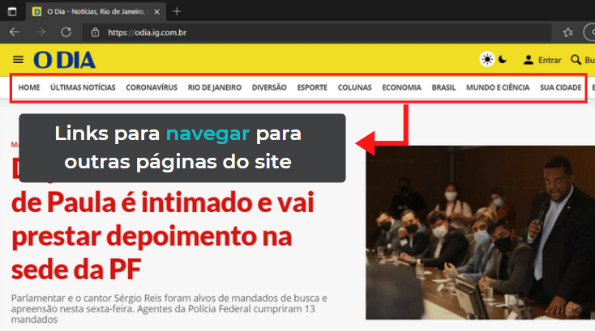
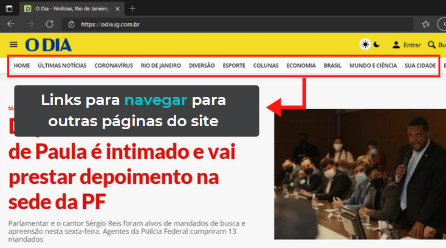


 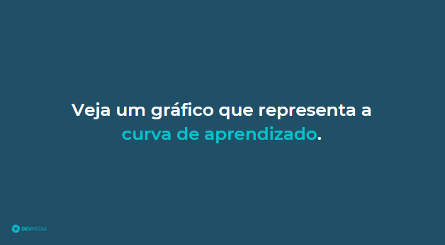
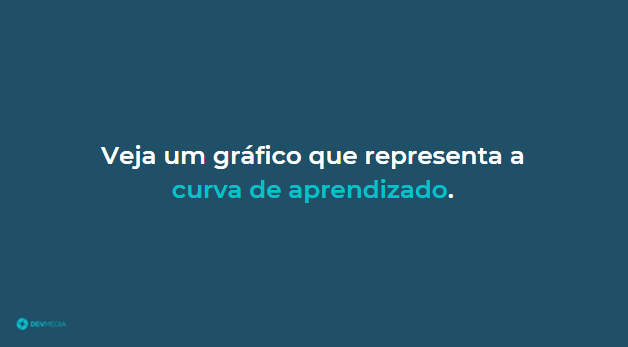

 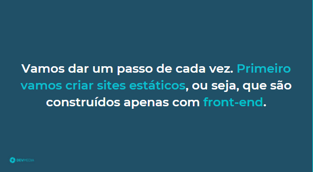
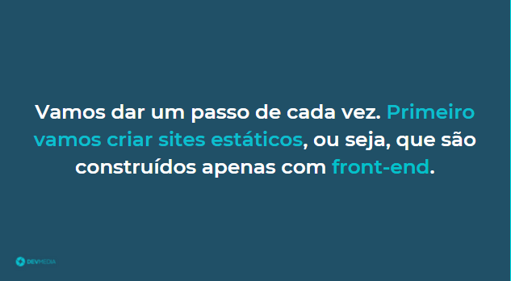